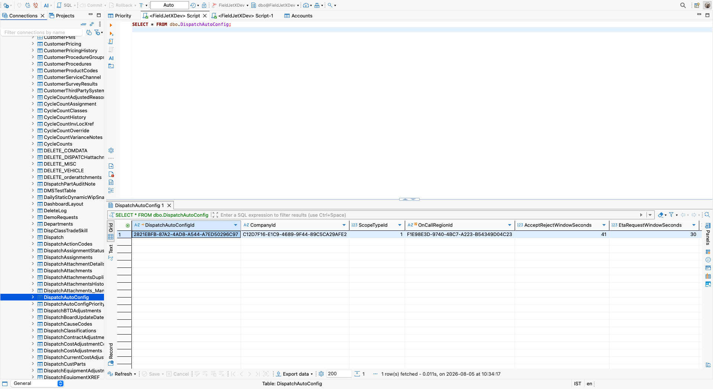
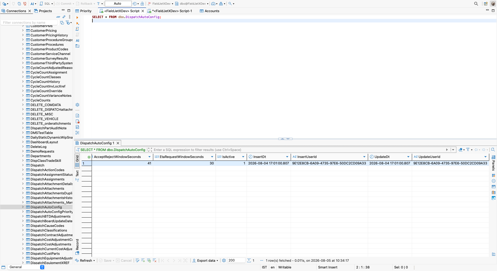
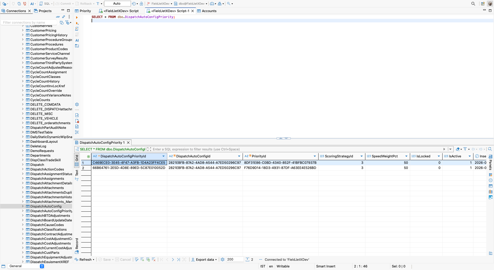
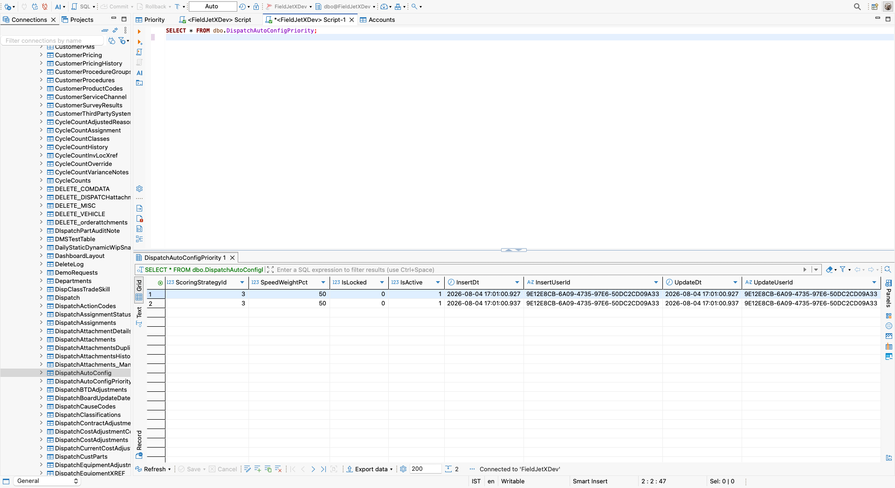

Use Case A · FieldJetX · two new tables, two endpoints, one screen
FieldJetX auto-assigns incoming service calls to technicians. Which technician "wins" depends on two things: how urgent the job is, and what that region cares about — arriving fastest, or sending someone who already knows the site.
This screen lets a dispatcher tune that behaviour per on-call region. For each region it sets two response timers, and for each dispatch type it sets the scoring strategy used to rank technicians.
| Setting | What it controls |
|---|---|
| Accept / reject window | Seconds a technician has to accept an offered job before the engine moves to the next candidate |
| ETA request window | Seconds a technician has to reply with an arrival estimate |
| Scoring strategy | Per dispatch type: rank by speed, by site familiarity, or a weighted blend of the two |
| Weight balance | When the strategy is Combined, the split between speed and familiarity |
Simplified replica of /systemConfig/dispatch-config. Every value shown comes from the database.
One child row = one column. The three columns are not hardcoded — the screen renders one
column per eligible dbo.Priority row. Add a fourth eligible priority and a fourth column appears
with no code change.
Blue boxes are new. Grey boxes already exist in FieldJetX and are only read from.
dbo.DispatchAutoConfigOne row per on-call region. Holds the two timers.
| Field | Type | Purpose |
|---|---|---|
| DispatchAutoConfigId PK | uniqueidentifier | Unique id of the row. Auto-generated. The child table points back at this. |
| CompanyId | uniqueidentifier | Which tenant this belongs to (ClimatePros vs Zuggit). Required because OnCallRegion has no CompanyId of its own — without it the two brands would collide. Set from the logged-in session, never from the browser. |
| ScopeTypeId | tinyint | What kind of thing this config attaches to. 1=On-Call Region, 2=Division, 3=Region, 4=Company-wide. Always 1 today — a placeholder so the scope can change later without a rebuild. |
| OnCallRegionId FK | uniqueidentifier | Which region. Foreign key to the existing dbo.OnCallRegion. This is what the REGION dropdown selects. |
| AcceptRejectWindowSeconds | int | The left slider. Seconds a technician has to accept an offered job before the engine moves on. Default 30, range 10–120. |
| EtaRequestWindowSeconds | int | The right slider. Seconds a technician has to reply with an arrival estimate. Default 30, range 10–120. |
| IsActive | bit | Soft delete — switch a region's config off without deleting the row. FieldJetX convention (95 other tables do this). |
| InsertDt | datetime | When the row was created. |
| InsertUserId | uniqueidentifier | Who created it. |
| UpdateDt | datetime | When it was last changed. |
| UpdateUserId | uniqueidentifier | Who last changed it. Matters here — scoring changes affect which technicians get work, so there is an audit trail. |
Unique index (CompanyId, OnCallRegionId) — one configuration per region per company, so you cannot accidentally create two for the same region.
dbo.DispatchAutoConfigPriorityOne row per dispatch type within a region. Three rows today = the three columns on screen.
| Field | Type | Purpose |
|---|---|---|
| DispatchAutoConfigPriorityId PK | uniqueidentifier | Unique id of this child row. |
| DispatchAutoConfigId FK | uniqueidentifier | Which region's config this belongs to. The link that keeps Albuquerque's settings separate from Boston's. ON DELETE CASCADE — delete a config and its children clean themselves up. |
| PriorityId FK | uniqueidentifier | Which dispatch type. Foreign key to existing dbo.Priority. Column heading, coloured dot and subtitle all come from there, so nothing is duplicated. |
| ScoringStrategyId | tinyint | Which radio button is selected. 1=Speed-based, 2=Familiarity-based, 3=Combined. One number replaces the whole radio group. Also decides whether the Weight Balance slider appears — only 3 shows it. |
| SpeedWeightPct | tinyint | The Weight Balance slider, 0–100. 70 means 70% speed / 30% familiarity. Familiarity is always 100 − this, so there is no second column that could drift out of sync. Only meaningful when the strategy is Combined. |
| IsLocked | bit | Marks a column read-only (Emergency). Sent to the UI so it disables the radios — and the save skips locked rows, so a hand-crafted HTTP request still cannot change it. Stored as data rather than a hardcoded name check, because priority names differ per company. |
| IsActive | bit | Soft delete, same as the parent. |
| InsertDt · InsertUserId UpdateDt · UpdateUserId | datetime uniqueidentifier |
Same audit set as the parent. |
Unique constraint (DispatchAutoConfigId, PriorityId) — a region cannot have two rows for the same dispatch type.
Check constraints SpeedWeightPct BETWEEN 0 AND 100 and ScoringStrategyId IN (1,2,3) — the database rejects nonsense even if the application has a bug.
DispatchAutoConfig
├ OnCallRegionId ───────────────────► REGION [ Albuquerque, NM ▾ ]
├ AcceptRejectWindowSeconds 41 ────► Accept / reject [──●────] 41s
└ EtaRequestWindowSeconds 30 ────► ETA request [──●────] 30s
┌───────────┬───────────┬───────────┐
DispatchAutoConfigPriority ⨝ Priority │ EMERGENCY │ HIGH │ NORMAL │
───────────────────────────────────── │ │ │ │
row 1 Priority.PriorityName ─────────► │ heading │ │ │
Priority.Color ────────────────► │ 🟡 dot │ │ │
Priority.PriorityDesc ─────────► │ subtitle │ │ │
IsLocked = 1 ──────────────────► │ [LOCKED] │ │ │
ScoringStrategyId = 1 ─────────► │ ● Speed │ │ │
│ │ │ │
row 2 ScoringStrategyId = 3 ───────────┼───────────┼● Combined │ │
SpeedWeightPct = 50 ─────────────┼───────────┼ 50% / 50% │ │
│ │ │ │
row 3 ScoringStrategyId = 2 ───────────┴───────────┴───────────┼● Familiar.│
└───────────┘Nothing about the columns is hardcoded. Headings, colours and subtitles all come from
dbo.Priority, so the screen is correct for any tenant — including Zuggit, whose priority list differs.
Two endpoints. Both return BaseInfo (the FieldJetX standard envelope) and both are secured by default via AppControllerBase.
Called when the page opens and whenever the region changes. Returns defaults (30 / 30 / Combined) if the region has never been configured.
{
"primaryReturn": {
"scopeTypeId": 1,
"scopeId": "F1E98E3D-9740-4BC7-A223-B54349D04C23",
"scopeName": "Albuquerque, NM", // dropdown label + footer sentence
"acceptRejectWindowSeconds": 41, // left slider
"etaRequestWindowSeconds": 30, // right slider
"priorities": [ // ONE ENTRY = ONE COLUMN
{
"priorityId": "3FE257A3-...",
"priorityName": "Emergency", // column heading
"priorityDesc": "Critical, time-sensitive orders",
"color": 14072855, // the coloured dot
"scoringStrategyId": 1, // which radio is filled
"speedWeightPct": 100,
"isLocked": true // draw LOCKED, disable radios
},
{ "priorityId": "8DF31E86-...", "priorityName": "High",
"scoringStrategyId": 3, "speedWeightPct": 50, "isLocked": false },
{ "priorityId": "F76D9D14-...", "priorityName": "Normal",
"scoringStrategyId": 2, "speedWeightPct": 50, "isLocked": false }
]
},
"saveError": false,
"message": ""
}Called only when the user clicks Save configuration. Dragging a slider is pure browser state until then.
{
"scopeTypeId": 1,
"scopeId": "F1E98E3D-9740-4BC7-A223-B54349D04C23",
"acceptRejectWindowSeconds": 41,
"etaRequestWindowSeconds": 30,
"priorities": [
{ "priorityId": "8DF31E86-...", "scoringStrategyId": 3, "speedWeightPct": 50 },
{ "priorityId": "F76D9D14-...", "scoringStrategyId": 2, "speedWeightPct": 50 }
]
}Success → saveError: false, and primaryReturn is the re-read configuration so the screen reflects exactly what was stored.
Two things deliberately absent from the request: companyId and userId.
Both are derived server side from _userContext.BuildAppValidationCheck(). If the browser sent
companyId, anyone could open dev tools, swap in Zuggit's GUID and overwrite their configuration.
Emergency is also absent — it cannot be edited, so there is nothing to send. And even if a
crafted client sent it, the save skips rows where IsLocked = 1.
| Condition | Message returned |
|---|---|
| Timer outside 10–120s | Accept/reject window must be between 10 and 120 seconds. |
scoringStrategyId not 1, 2 or 3 | Unknown scoring strategy. |
speedWeightPct above 100 | Weight must be between 0 and 100. |
| No region selected | A region must be selected. |
| Unknown scope type | Unknown configuration scope. |
Screenshots from DBeaver against the local database, after saving from the screen. The Accept/reject slider was moved to 41s and saved; these are the rows that landed.
DispatchAutoConfig — the parent row
ScopeTypeId = 1 (on-call region) · OnCallRegionId = F1E98E3D… (Albuquerque, NM) ·
AcceptRejectWindowSeconds = 41 · EtaRequestWindowSeconds = 30

InsertUserId and UpdateUserId are 9E12E8CB… — the
signed-in user, resolved server side. The browser never sent it, which is what stops a
client writing to another tenant.
DispatchAutoConfigPriority — the child rows
2821EBFB…. 8DF31E86… is High and
F76D9D14… is Normal, each ScoringStrategyId = 3 (Combined) at
SpeedWeightPct = 50.

Note what is not there: a third row. Emergency has no child row, because it is
locked. The screen doesn't send it and the save skips rows where IsLocked = 1 — so it cannot be
changed even by a hand-crafted HTTP request, not just by a disabled radio button.
Two different “per”: two numbers per region (the timers) and two numbers per dispatch type (strategy + weight). Standard parent/child — the same shape as Order → OrderLines.
CPData.Repository already calls SaveChangesAsync 329 times, so
this matches existing practice. It also means the only DBA dependency is CREATE TABLE ×2,
which unblocks development days earlier.
Familiarity is always 100 − SpeedWeightPct. Storing both would mean an invariant to
validate and floating-point drift to worry about. The UI already works in whole percentages.
IsLocked as dataThe obvious version is if (name == "Emergency") disable() — which breaks the moment a
company renames it, since PriorityName is per-company text. The server decides; the UI obeys.
ScopeTypeId — a hedgeThe scope question was still open. v1 always writes 1 with a real OnCallRegionId.
If it becomes Division we write 2 and add a nullable column — no data migration.
Trade-off: keeping a real FK on
OnCallRegionId gives referential integrity but means one ALTER TABLE later. A generic
ScopeId avoids that but the database could no longer reject a bogus GUID. We chose integrity.
ROWVERSION concurrency, two lookup tables, CHECK constraints on the slider bounds, a fallback-resolution proc. Bounds are validated in the service instead, so changing 120s → 180s doesn't need a DBA ticket. All are cheap to add later; none are cheap to remove once depended on.
These came out of building against real data and change the design assumptions.
1 · There is no “Emergency” priority. dbo.Priority holds 18 rows
for our company and none is called Emergency:
High · Normal · HOT PARTS - ASAP · LOCKED - SCHEDULED · Overtime Approved · PM · Special Equipment · Warranty (Hot) · Trakyn - (CP) Triage · (P1) Emergency 2hr · (P2) Today 4hr · (P3) Next day · (P4) Installation · (P6) Scheduled PM · (P8) Parts order · (PUR) Large parts · (REF) Freon · (one row with a blank name)
Interim: eligible priorities and display names come from configuration, currently mapping
Overtime Approved → "Emergency", plus High and Normal.
Question: is that the right row, and should the screen show the real name or the relabelled one?
2 · Every PriorityDesc is NULL. The grey subtitles in the design don't exist in
the data — they are supplied from configuration today. Populating PriorityDesc would be the better
fix and would benefit other screens too.
3 · One priority row has a blank name. Worth cleaning up — it would render as an unnamed column if it were ever made eligible.
Proposed proper fix — put the rule with the data instead of in appsettings:
ALTER TABLE dbo.Priority
ADD IsAutoDispatchEligible bit NOT NULL
CONSTRAINT DF_Priority_AutoDispatch DEFAULT (0);The screen then filters on that flag. The configuration list is an interim measure so development wasn't blocked.
FieldJetX has no migration framework. Verified in the codebase:
0 EF migration folders, 0 .sqlproj, 0
.dacpac, 0 CREATE PROCEDURE scripts.
The database is the source of truth — fieldgeticsContext (11,394 lines, 544 DbSets) was
reverse-engineered from it. So “migration” here means handing the DBA a SQL script,
not running a tool. Script is ready: DispatchAutoConfig_tables.sql.
| Item | Status |
|---|---|
| Tables created and tested | ✅ local SQL Server (Docker) |
Entities + fieldgeticsContext registration | ✅ |
| Repository / Service / Controller | ✅ builds clean, 0 errors |
DI registration in Startup.cs | ✅ |
| Angular screen reading + writing through the API | ✅ |
| Save → reload round-trip verified in the database | ✅ |
| DEV / QA / STG | ❌ needs DBA to run the DDL |
Overtime Approved the right row for Emergency?IsAutoDispatchEligible to dbo.Priority?PriorityDesc be populated? All 18 rows are NULL.